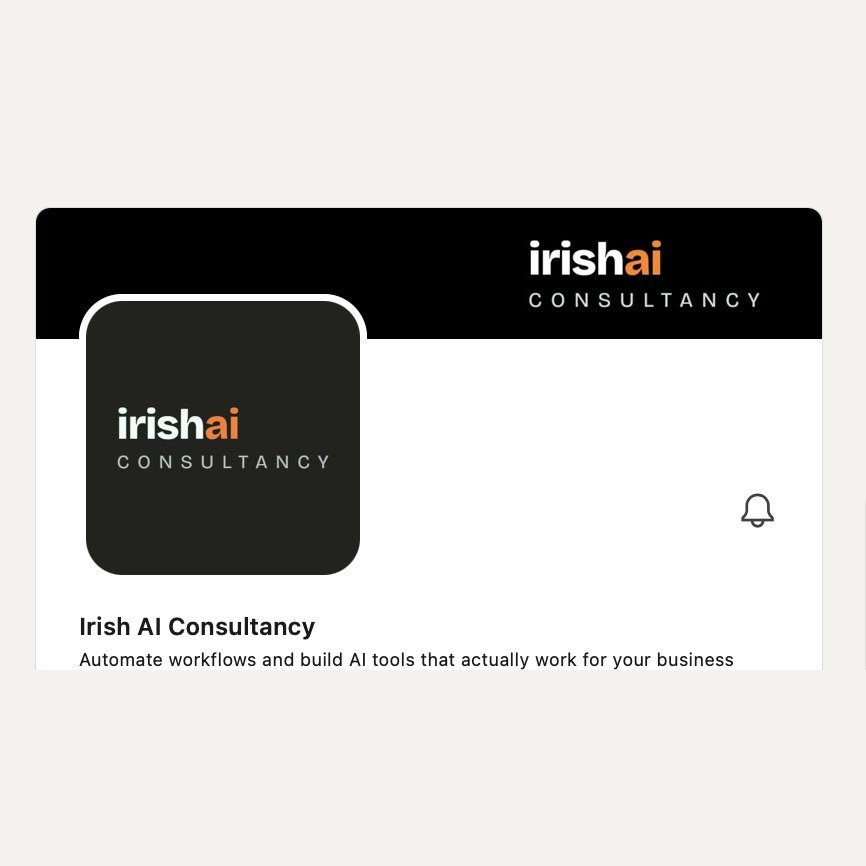
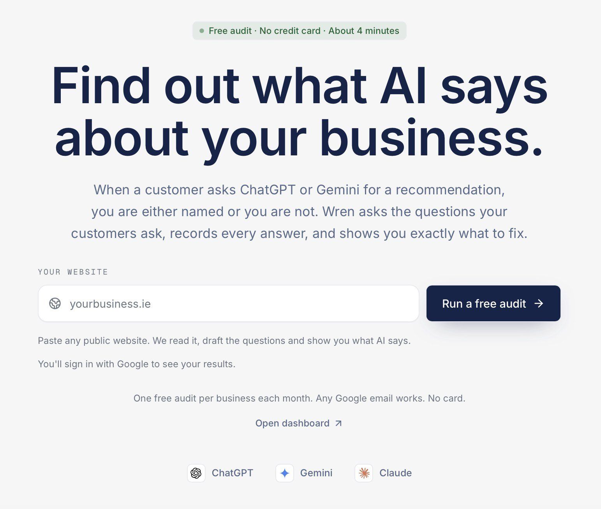

The setup
Irish AI Consultancy helps businesses automate workflows and build AI tools that work for them. It is a young company with ambitious plans, and I joined as it was getting ready to take its marketing to the next stage.
The insight
B2B buyers research quietly. Before a business owner returns a call, they look the company up, and what they find has to earn the conversation. So the brief was not a single campaign. It was the foundations every future campaign would stand on.
What I delivered
Five foundations in four weeks.
The work
Brand and voice. I wrote the brand guidelines first, so everything that followed sounded like one company. Then I launched the LinkedIn page and built its content schedule.
Pipeline. I set up HubSpot and organised around 900 contacts, giving the business development team a clean base to work from.
Plan. I developed a 90-day marketing plan across LinkedIn, email, partnerships and direct outreach, with a weekly scorecard to show what was working.
Proof of expertise. I audited six business websites for SEO, AI search and conversion, and turned the findings into clear reports with prioritised fixes.
WingLift. I shaped the website messaging, copy and branding for WingLift, a tool that shows businesses how AI assistants describe and recommend them.
Events. I built the business case, sponsor pitch and brochure for an upcoming event series, and I am now coordinating venues for it.


The outcome
Contacts in the CRM
Organised in HubSpot for outreach, approximately.
Day marketing plan
Across four channels, with a weekly scorecard.
Website audits
For SEO, AI search and conversion.
Weeks
From first brief to working foundations.
Most of this work sits inside the business, so I can describe it here but not show it. I am always happy to walk through it in conversation. See the LinkedIn page or visit winglift.io.
What I took from it
Foundations are unglamorous, and they compound. Every post, call and event the company runs from here sits on something that was set up in those first four weeks. I learned to start with the things nobody sees.